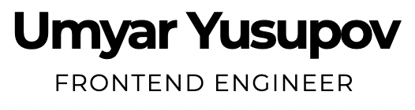

Umyar Yusupov
Frontend Engineer Привет!
Я тут буквально на выходных сел и накидал на скорую руку эту веб-страницу, чтобы много раз не отвечать людям одно и то же на одни и те же вопросы. Сейчас этот сайт умеет только показывать одну страницу и больше ничего. Ниже приведена сводка наиболее часто встречающихся вопросов и ответы на них. FAQ так сказать.
FAQ
- Умяр, Вы сейчас открыты к предложениям о работе?
- Да, сейчас я нахожусь в поиске работы мечты. Но проблема в том, что предложений поступает много и среди них сложно становится отфильтровывать что-то что может сильно заинтересовать.
- Вообще-то мы стоящая компания! Как Вы вообще можете оценить потенциального работодателя не узнав о нем подробнее?
- Да, все верно. Но все мы знаем, что встречают по одежке. Именно этого сейчас, пожалуй, и хотелось бы. Встретить по одежке.
- По какой одежке Вы, Умяр, можете сделать первое впечатление?
- Сейчас это зарплатная вилка. Я не рассматриваю предложений ниже чем 4000$ (280 000 руб) на руки. При прочих равных условиях выбор сделаю в сторону заработной платы в долларах (евро). Думаю об открытии ИП, поэтому можно рассматривать меня как кандидата-контрактора. Релокейт рассмотреть готов, но пока мне, наверное, сложно сдвинуться с места.
- Чем же тебя такого заинтересовать то, меркантильный ты наш? 😬
- Интересными задачами, дружным коллективом, печеньками и кофемашиной в офисе.
- Ну так а что же интересные задачи то для тебя?
- В первую очередь наиболее интересным для меня является возможность попасть на позицию лида. Сейчас я веду переговоры с некоторым количеством работодателей, которые могут предложить такую должность. Конечно же не все сразу готовы брать человека без коммерческого опыта тимлидства на такую позицию, но я уверен, что справился бы. Я прекрасно понимаю, что в развитом проекте (продукте) сначала нужно приобрести необходимый багаж доменных знаний, а только потом становиться лидом. Это меня не пугает. Наверное это единственный верный путь в лиды. Сначала ты как рядовой разработчик знакомишься с продуктом, а только потом можешь взять на себя более серьезные обязанности, чем просто пилить таски, которые упали на тебя от project manager / product manager / teamlead.
- Почему ушел с последнего места работы?
- Не договорились о зарплате. Мне пошли навстречу, но я уверен, что могу больше. 🧐
- Как ты себя оцениваешь? Middle/Senior?
- Человек прямоходящий, который умеет включить компьютер. Вот кто я. Однако недавно я был сильно удивлен, после того, как парочку работодателей отказались со мной продолжать переговоры после финальных собеседований на позицию разработчика. Сказали, что мне будет скучно у них и сейчас они не сеньоров подбирают. Во всех компаниях разные грейды. Где-то меня оценили как middle разработчика. Так вот. На этот вопрос я не отвечу, оцените меня сами! 🤓
- Какой должны быть твоя команда?
- Гибкой. Люди должны не бояться совершать ошибки. Все (большинство) в команде должны быть открыты новому. Команда должна уметь подвергать свои взгляды сомнениям.
- Как быстро ты готов выйти на работу?
- Хоть завтра, если пойму, что мы можем здорово сработаться. Если я буду сомневаться в этом, то буду продолжать искать. У меня есть любимая жена, которая готова посадить меня на шею и позволить не работать вовсе, поэтому искать работу я могу рассудительно и без спешки. Кто знает, может быть жена к этому моменту уже станет сеньором и мне вообще не придется работать. 🕺
- Кем Вы видите себя через n лет?
- У самурая нет цели, только путь. Недавно я ответил одному человеку на этот вопрос именно так. Это первое, что пришло мне в голову. Но оно верно передает суть. В ближайшее время я вижу себя разработчиком, который вот-вот станет лидом. Я попробую себя в этой роли, а потом смогу сказать чего я хочу дальше.
- Какую пользу Вы можете принести проекту?
- Да вообще любую. Меня всегда интересовало то, как построена монетизация того или иного продукта. Когда мы будем общаться, я обязательно захочу узнать как зарабатывает ваш продукт. Окупился ли он или сейчас еще в стадии стартапа? И в том и в другом случае я буду понимать и чувствовать как мне нужно действовать, чтобы помочь вашему проекту стать более прибыльным. Если нужно сесть и написать какой-то бэкенд, то я засучу рукава и напишу на nodejs простой CRUD. Если вы скажете, что надо на Go, то я сяду и выучу Go. Потом напишу бэкенд. Здесь важно лишь помнить о том, что возможно выгоднее для бизнеса взять готового бэкенд-разработчика, нежели просить меня разобраться в каких-то базовых вещах. Я же получил бы много удовольствия, если бы вы дали мне возможность попробовать что-то совершенно новое. Сейчас к примеру я рассматриваю пару вакансий с ElectronJs стеком. А сам по вечерам начал писать React-Native приложение.
- Это все вопросы?
- Нет, сайт будет постоянно пополняться. Планирую еще каждый вопрос сделать якорной ссылкой, для более удобной навигации. Любые комментарии приветствуются. Можно сказать, что я наглый или глупый напрямую, это меня не оттолкнет. Еще лучше, если Вы сможете предложить что-то улучшить. Если Вы не нашли ответа на какой-либо свой вопрос, то задайте его лично. Скажите, что на сайте не было ответа. Я с радостью Вам отвечу, а потом сразу побегу писать этот вопрос сюда. 🌚